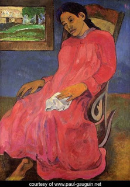

Bava Metzia 23 - Basic Rules of Lost Objects
Once the owner has said, "Woe to me for the monetary loss I have sustained," or expressed his belief in the hopelessnesses of recovering the lost object in any manner, he has given up hope of ever recovering it, and whoever finds it now may keep it.
If one finds objects that have an identifying mark, or sign (siman), the finder is obligated to announce his find. The sign can be weight, bundle count, or location where it was lost.
If objects without a sign look like they have been left by the owner, the finder announces them, lest the people who don't observe this law will take them.
Test your knowledge of the daf